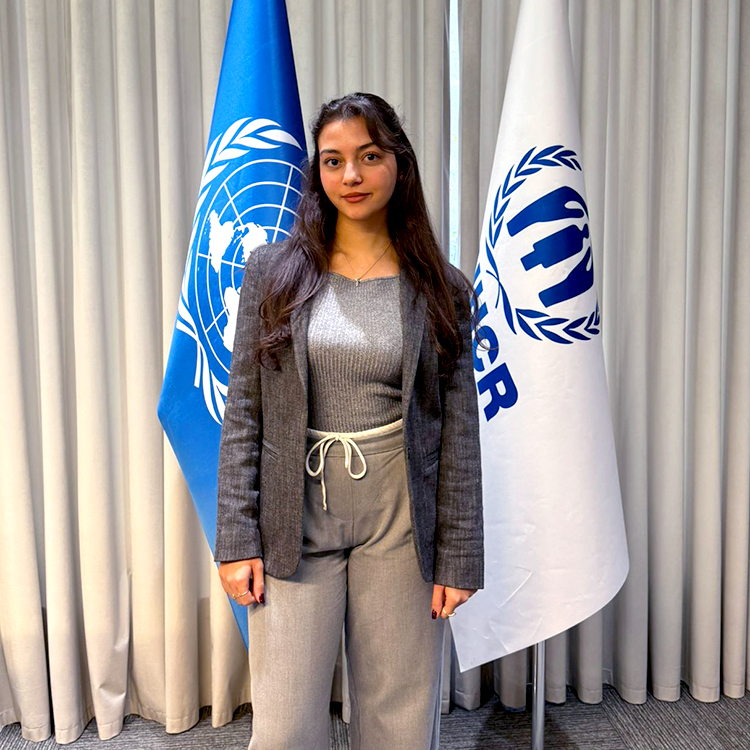

Education
TED Ankara College Foundation High School
Senior Student / Anticipated Graduation: June 2026
- September 2022 - Ongoing
- Ankara, Turkey
- Follow the Science-Math concentration of the Turkish National Ministry of Education high school curriculum, with TED Ankara's Senior Scholar Program (SSP), which adds more advanced science and mathematics topics on top of the regular curriculum
- Relevant Courses: Mathematics, Biology, Chemistry, Physics, English, French, Turkish Language and Literature, History, Philosophy, Computer Science, and more
Experience
United Nations High Commissioner for Refugees (UNCHR)
Intern
- October 2025
- Ankara, Turkey
- Internship Report
- Learned about the relationship between environmental sustainability, human rights, and refugee protection in the context of the UN framework, specifically the emergent discussion on climate-induced displacement, and examined how the UN's Sustainable Development Goals (SDGs) map to UNCHR's activities
- Assisted research on sustainable development awareness projects and explored how refugee communities participate in local sustainability planning
Academic Enrichment
Programming and Algorithmic Thinking
- OngoingŞ
- Get private tutoring from Asst Prof Onur Ugurlu on the fundamentals of programming, how to think algorithmically, and advanced problem-solving techniques
Coursera & Stanford Online: Writing in the Sciences
- Ongoing
- Learn how to write clear, concise, and engaging scientific texts, such as manuscripts, grants, and reviews, with emphasis on active voice, strong structure, and ethical publishing practices
- Gain skills in effective science communication for both academic and general audiences, including peer review, media engagement, and writing for non-specialists
Research Project: The Impact of Social Media on Eating Disorders and Body Image
- October 2024 - January 2025
- Report (In Turkish)
- Examined the impact of social media on young adults' body image and eating habits with a group
- Designed and administered a survey, using the REZZY questionnaire, the Turkish adaptation of the SCOFF questionnaire used to screen for eating disorders, and collected data from 177 high school students
- Analyzed the connection between excessive use of social media and eating disorder risk with chi-square tests and found meaningful correlations, and used regression to look whether gender plays as an independent variable
- Came up with future suggestions for new studies to corroborate and expand on these results
- Gained experience in literature review, statistical analysis, referencing, and academic writing
- Wrote a term paper for Mathematics on real-life applications of probability and explored its mathematical foundations, history, use in daily scenarios such as weather forecasting, sports analysis, and medical diagnosis, understanding of statistical reasoning, conditional probability, and decision-making under uncertainty
Extracurricular Activities
- Earned several high-level ballet certifications from both the Royal Academy of Dance (Grades 1-8) and the Turkish National Ministry of Education (up to the highest level), and perform ballet and waltz at school events
- Spend time in an artist studio to create 2D and 3D artistic works, and have been involved with school art shows
- Was awarded the Jury Special Award for my short story in the 2020 Özgür Pencere national student short story competition, which was printed in that year's anthology
BTK Akademi: Fundamentals of Microsoft Word
- Took an introductory course on Microsoft Word, gaining proficiency in document creation, text and paragraph formatting, page layout, and use of templates and styles
- Applied advanced editing and design tools such as tables, charts, headers, footers, and referencing features to produce professional, well-structured documents
BTK Akademi: Fundamentals of Microsoft Excel
- Completed a course on Microsoft Excel, learned essential spreadsheet operations, formulas, data organization, and basic analytical functions, and created visual data representations through charts and conditional formatting to communicate insights effectively
Social Responsibilities
Rehber Köpekleri Derneği (Guide Dogs Association)
- Assist with public relations efforts, voicing and writing for the project of animated stories of seeing-eye guide dogs to be released on digital streaming platforms to raise awareness on how guide dogs can help and improve the lives of people who are blind or have low vision
- Collaborated with team members to plan and manage logistics, sales, and community engagement for club activities and events such as charity fairs, social events, and bake sales for national and international occasions
- Contributed to social awareness initiatives by organizing speaker sessions and conferences, preparing social media campaigns, and delivering short in-school announcements for significant awareness days
Skills
Language
- Turkish (Native)
- English (Advanced)
- French (Intermediate)
Technical
- Microsoft Office (Word, Excel)
Sports
- Played tennis as a licensed athlete for 10 years
- Have been skiing for 13 years
- Hold RS-1 and RS-2 certifications from the Turkish Sailing Federation for windsurfing
Interests
- Painting
- Macrame
- Working with clay, and other hands-on arts and crafts
- Playing the piano